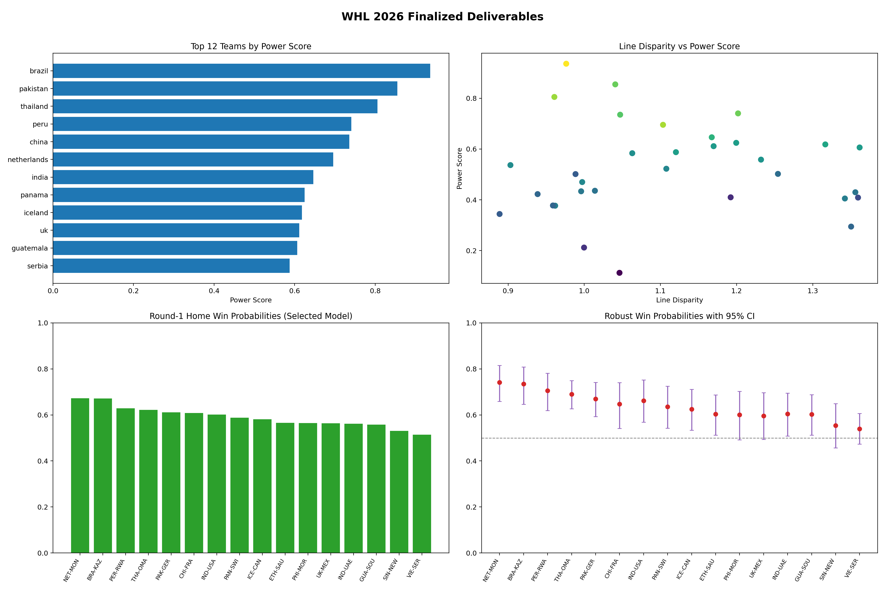

| Rank | Team | Power_Score | Wins | Elo_Rating | EV_xG% |
|---|---|---|---|---|---|
| 1 | brazil | 0.9363 | 58 | 1574.3 | 0.5941 |
| 2 | pakistan | 0.8550 | 49 | 1541.6 | 0.5864 |
| 3 | thailand | 0.8053 | 50 | 1552.8 | 0.5944 |
| 4 | peru | 0.7406 | 52 | 1542.9 | 0.5253 |
| 5 | china | 0.7354 | 47 | 1536.7 | 0.5417 |
| 6 | netherlands | 0.6956 | 54 | 1555.9 | 0.5167 |
| 7 | india | 0.6464 | 49 | 1523.3 | 0.4974 |
| 8 | panama | 0.6245 | 46 | 1510.8 | 0.4957 |
| 9 | iceland | 0.6183 | 46 | 1515.5 | 0.4985 |
| 10 | uk | 0.6114 | 39 | 1508.8 | 0.5081 |
| 11 | guatemala | 0.6063 | 42 | 1509.6 | 0.5389 |
| 12 | serbia | 0.5877 | 41 | 1511.1 | 0.5121 |
| 13 | mexico | 0.5836 | 38 | 1502.1 | 0.5660 |
| 14 | new_zealand | 0.5583 | 40 | 1505.5 | 0.5055 |
| 15 | ethiopia | 0.5368 | 43 | 1500.5 | 0.4866 |
| 16 | south_korea | 0.5224 | 39 | 1497.8 | 0.5498 |
| Rank | Team | Disparity_Ratio | Wins | Power_Rank | Elo_Rank |
|---|---|---|---|---|---|
| 1 | guatemala | 1.3616 | 42 | 11 | 11 |
| 2 | usa | 1.3595 | 35 | 25 | 29 |
| 3 | saudi_arabia | 1.3560 | 39 | 22 | 21 |
| 4 | uae | 1.3504 | 38 | 30 | 25 |
| 5 | france | 1.3422 | 37 | 26 | 19 |
| 6 | iceland | 1.3165 | 46 | 9 | 8 |
| 7 | singapore | 1.2543 | 40 | 17 | 23 |
| 8 | new_zealand | 1.2321 | 40 | 14 | 13 |
| 9 | peru | 1.2019 | 52 | 4 | 4 |
| 10 | panama | 1.1995 | 46 | 8 | 10 |
| 11 | rwanda | 1.1922 | 30 | 24 | 31 |
| 12 | uk | 1.1699 | 39 | 10 | 12 |
| 13 | india | 1.1674 | 49 | 7 | 7 |
| 14 | serbia | 1.1204 | 41 | 12 | 9 |
| 15 | south_korea | 1.1078 | 39 | 16 | 17 |
| 16 | netherlands | 1.1034 | 54 | 6 | 2 |
| Game | Home_Team | Away_Team | Win_Prob | Predicted_Winner | Confidence | Robust_Win_Prob | Robust_CI_Low_95 | Robust_CI_High_95 | Fragility_Index | Edge_Stability | Top_Edge_Driver | Top_Edge_Contribution | Model_Rationale |
|---|---|---|---|---|---|---|---|---|---|---|---|---|---|
| netherlands vs mongolia | netherlands | mongolia | 0.6727 | netherlands | 0.6727 | 0.7410 | 0.6591 | 0.8150 | 0.0000 | High | Elo | 0.1285 | netherlands favored; strongest signal is Elo (home-leaning) with edge contribution +0.128. |
| brazil vs kazakhstan | brazil | kazakhstan | 0.6717 | brazil | 0.6717 | 0.7346 | 0.6463 | 0.8081 | 0.0000 | High | Elo | 0.1266 | brazil favored; strongest signal is Elo (home-leaning) with edge contribution +0.127. |
| peru vs rwanda | peru | rwanda | 0.6288 | peru | 0.6288 | 0.7059 | 0.6188 | 0.7816 | 0.0000 | High | Elo | 0.1097 | peru favored; strongest signal is Elo (home-leaning) with edge contribution +0.110. |
| thailand vs oman | thailand | oman | 0.6223 | thailand | 0.6223 | 0.6898 | 0.6265 | 0.7494 | 0.0000 | High | Elo | 0.1013 | thailand favored; strongest signal is Elo (home-leaning) with edge contribution +0.101. |
| pakistan vs germany | pakistan | germany | 0.6111 | pakistan | 0.6111 | 0.6693 | 0.5929 | 0.7411 | 0.0000 | High | Elo | 0.0906 | pakistan favored; strongest signal is Elo (home-leaning) with edge contribution +0.091. |
| china vs france | china | france | 0.6084 | china | 0.6084 | 0.6471 | 0.5413 | 0.7401 | 0.0015 | High | Elo | 0.0772 | china favored; strongest signal is Elo (home-leaning) with edge contribution +0.077. |
| india vs usa | india | usa | 0.6014 | india | 0.6014 | 0.6617 | 0.5687 | 0.7517 | 0.0000 | High | Elo | 0.0871 | india favored; strongest signal is Elo (home-leaning) with edge contribution +0.087. |
| panama vs switzerland | panama | switzerland | 0.5878 | panama | 0.5878 | 0.6358 | 0.5418 | 0.7251 | 0.0035 | High | Elo | 0.0727 | panama favored; strongest signal is Elo (home-leaning) with edge contribution +0.073. |
| iceland vs canada | iceland | canada | 0.5810 | iceland | 0.5810 | 0.6248 | 0.5331 | 0.7111 | 0.0030 | High | Elo | 0.0668 | iceland favored; strongest signal is Elo (home-leaning) with edge contribution +0.067. |
| ethiopia vs saudi_arabia | ethiopia | saudi_arabia | 0.5652 | ethiopia | 0.5652 | 0.6030 | 0.5119 | 0.6870 | 0.0130 | High | Elo | 0.0551 | ethiopia favored; strongest signal is Elo (home-leaning) with edge contribution +0.055. |
| philippines vs morocco | philippines | morocco | 0.5648 | philippines | 0.5648 | 0.6009 | 0.4915 | 0.7022 | 0.0340 | Medium | Elo | 0.0523 | philippines favored; strongest signal is Elo (home-leaning) with edge contribution +0.052. |
| uk vs mexico | uk | mexico | 0.5632 | uk | 0.5632 | 0.5955 | 0.4938 | 0.6968 | 0.0310 | Medium | Elo | 0.0502 | uk favored; strongest signal is Elo (home-leaning) with edge contribution +0.050. |
| indonesia vs uae | indonesia | uae | 0.5619 | indonesia | 0.5619 | 0.6045 | 0.5085 | 0.6947 | 0.0190 | High | Elo | 0.0555 | indonesia favored; strongest signal is Elo (home-leaning) with edge contribution +0.056. |
| guatemala vs south_korea | guatemala | south_korea | 0.5583 | guatemala | 0.5583 | 0.6023 | 0.5121 | 0.6880 | 0.0120 | High | Elo | 0.0540 | guatemala favored; strongest signal is Elo (home-leaning) with edge contribution +0.054. |
| singapore vs new_zealand | singapore | new_zealand | 0.5304 | singapore | 0.5304 | 0.5540 | 0.4569 | 0.6489 | 0.1325 | Medium | Elo | 0.0279 | singapore favored; strongest signal is Elo (home-leaning) with edge contribution +0.028. |
| vietnam vs serbia | vietnam | serbia | 0.5141 | vietnam | 0.5141 | 0.5393 | 0.4730 | 0.6062 | 0.1275 | Medium | Elo | 0.0214 | vietnam favored; strongest signal is Elo (home-leaning) with edge contribution +0.021. |
| Component | Weight | Interpretation |
|---|---|---|
| Elo | 0.5300 | Higher weight means stronger influence in the final blend. |
| SGD | 0.4700 | Higher weight means stronger influence in the final blend. |
| LogReg | 0.0000 | Higher weight means stronger influence in the final blend. |
| XGB | 0.0000 | Higher weight means stronger influence in the final blend. |
| XGB2 | 0.0000 | Higher weight means stronger influence in the final blend. |
| Rank | Feature_Name | Std_Coef | Direction | Plain_English |
|---|---|---|---|---|
| 1 | PDO (shooting + save luck proxy) | 0.3135 | supports home team | When the home team is stronger on PDO (shooting + save luck proxy), the model generally increases home win probability. |
| 2 | rolling xGF (20 games) | 0.2515 | supports home team | When the home team is stronger on rolling xGF (20 games), the model generally increases home win probability. |
| 3 | close-game win percentage | -0.2289 | supports away team | When the home team is stronger on close-game win percentage, the model generally decreases home win probability. |
| 4 | win percentage | 0.1994 | supports home team | When the home team is stronger on win percentage, the model generally increases home win probability. |
| 5 | rolling xGA (20 games) | -0.1888 | supports away team | When the home team is stronger on rolling xGA (20 games), the model generally decreases home win probability. |
| 6 | pregame Elo rating | -0.1772 | supports away team | When the home team is stronger on pregame Elo rating, the model generally decreases home win probability. |
| 7 | shelter index | -0.1210 | supports away team | When the home team is stronger on shelter index, the model generally decreases home win probability. |
| 8 | recent form (last 5 games) | -0.1157 | supports away team | When the home team is stronger on recent form (last 5 games), the model generally decreases home win probability. |
| 9 | rest proxy | -0.0807 | supports away team | When the home team is stronger on rest proxy, the model generally decreases home win probability. |
| 10 | even-strength xG share | 0.0786 | supports home team | When the home team is stronger on even-strength xG share, the model generally increases home win probability. |
| 11 | power-play xG per 60 | -0.0729 | supports away team | When the home team is stronger on power-play xG per 60, the model generally decreases home win probability. |
| 12 | penalty-kill xGA per 60 | -0.0593 | supports away team | When the home team is stronger on penalty-kill xGA per 60, the model generally decreases home win probability. |

| Check | Value | Status | Details |
|---|---|---|---|
| raw_vs_main_rows | raw=25827, main_nonblank=25827, main_blank=0 | PASS | MainSheet blank rows are excluded via dropna(how='all'). |
| main_keys_not_in_raw | 0 | PASS | nonempty_extra_rows=0 |
| season_shape | teams=32, games=1312 | PASS | Workbook reference is 32 teams and 1,312 games. |
| corrupted_csv_placeholders | 0 | PASS | none |
| raw_main_parity_toi | max_abs_diff=0; neq_rows=0 | PASS | Compared by record_id. |
| raw_main_parity_home_shots | max_abs_diff=0; neq_rows=0 | PASS | Compared by record_id. |
| raw_main_parity_away_shots | max_abs_diff=0; neq_rows=0 | PASS | Compared by record_id. |
| raw_main_parity_home_xg | max_abs_diff=0; neq_rows=0 | PASS | Compared by record_id. |
| raw_main_parity_away_xg | max_abs_diff=0; neq_rows=0 | PASS | Compared by record_id. |
| raw_main_parity_home_goals | max_abs_diff=0; neq_rows=0 | PASS | Compared by record_id. |
| raw_main_parity_away_goals | max_abs_diff=0; neq_rows=0 | PASS | Compared by record_id. |
| raw_required_columns | 0 | PASS | none |
| main_required_columns | 0 | PASS | none |
| pp_required_columns | 0 | PASS | none |
| unit_required_columns | 0 | PASS | none |
| rest_required_columns | 0 | PASS | none |
| tev_required_columns | 0 | PASS | none |
| training_diff_columns_present | 0 | PASS | none |
| training_numeric_matrix_valid | 0 | PASS | Matrix converted with nan_to_num before modeling. |
| data_integrity_summary | core parity ok | PASS | Core shift metrics in MainSheet match raw by record_id. |
| Check | Value | Status | Details |
|---|---|---|---|
| train_test_game_id_overlap | 0.000000 | PASS | Expected 0 overlap between train and holdout game ids |
| time_split_logreg_holdout | 0.686635 | INFO | AUC=0.5594 |
| permuted_label_sanity | 0.748071 | PASS | AUC=0.4568 (should be near random) |
| random_split_vs_time_split_ll_gap | 0.008295 | INFO | Positive means random split is easier than temporal split |
| max_feature_target_corr_abs | 0.138303 | PASS | Feature=pdo_d |
| selected_blend_overfit_gap | -0.010874 | OK | holdout_ll - oof_ll for selected blend |